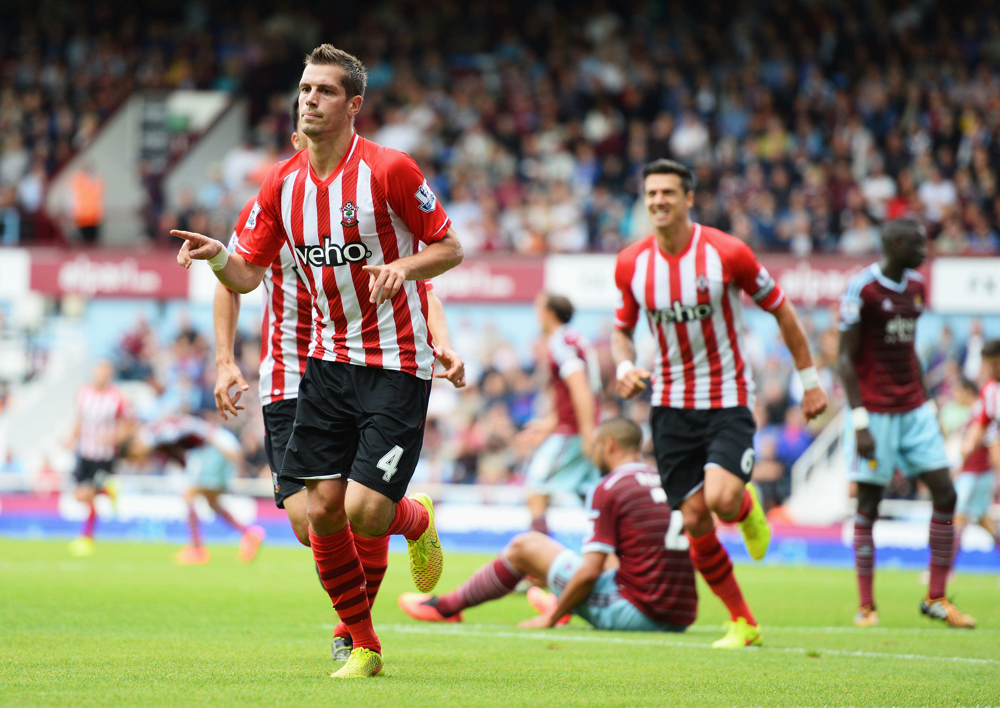
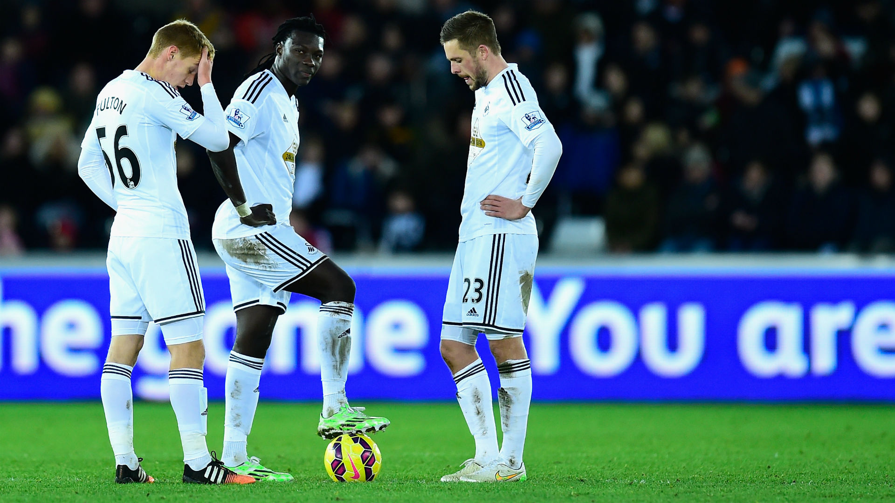

Команды премьер-лиги можно увидеть здесь.
Лондон
Из Лондона выступают больше всего команд в английской премьер-лиги. Лондон представлен аж 5 командами и это очень много, если учитывать, что всего в премьер-лиге 20 команд.
Арсенал
Арсенал - английский футбольный клуб из Северного Лондона, выступающий в Премьер-лиге. Основан в 1886 году. Клуб 13 раз становился чемпионом Англии, 12 раз выигрывал Кубок Англии. Домашним стадионом клуба является «Эмирейтс», вмещающий 60 272 зрителя.
«Арсенал» провел большую часть своей истории в высшем дивизионе английского футбола, в 1992 году стал одним из клубов-основателей английской Премьер-лиги. Также клуб является рекордсменом по количеству сезонов подряд, проведённых в высшем дивизионе чемпионата Англии, начиная с 1919 года.
В 2014 году журнал Forbes опубликовал рейтинг самых дорогих футбольных клубов мира, в котором «Арсенал» занял 5 место. Стоимость клуба оценена в $1,33 млрд.
Главным тренером «Арсенала» c 1996 года является француз Арсен Венгер, что является рекордом в истории клуба по продолжительности пребывания на тренерском посту. Под руководством француза «Арсенал» за 19 сезонов выиграл шесть Кубков Англии, а также ни разу не опускался ниже 4-го места в Премьер-лиге, выиграв три титула.

Вест Хэм Юнайтед
Вест Хэм - английский футбольный клуб из Аптон-Парк, района в округе Ньюэм на востоке Лондона. Клуб основан в 1895 году, в настоящее время выступает в Премьер-лиге.
На 2016-2017 год Вест Хэм обновит свою эмблему, форму, и перейдут на новый стадион Олимпийский стадион, на котором они сыграют свой первый матч с Ювентусом 7 августа 2016 года.
Футбольный клуб «Вест Хэм» начал своё существование в 1895 году под другим названием. Тогда команду именовали «Thames Ironworks F.C.». Молодой клуб стал играть в Лиге Лондона через год после своего создания, и в следующем сезоне выиграл турнир. Затем он вступил во Второй дивизион Южной лиги. «Молотобойцы» праздновали успех в первом своём сезоне в новом турнире. В 1900 году клуб изменил название и стал именоваться «Вест Хэм Юнайтед». Это название команда сохранила и по сей день.
Кристал Пэлас
Кристал Пэлас - английский футбольный клуб из Кройдона, южный Лондон. В сезоне 2012/13 команда выиграла в плей-офф Чемпионшипа (дивизион уровнем ниже премьер-лиги) и сезон 2013/14 проводит в Премьер-лиге.
С 1924 года выступает на стадионе «Селхерст Парк». Главным соперником клуба является «Брайтон энд Хоув Альбион», с которым разыгрывается дерби М23.
Прозвище клуба — «орлы». Орёл также находится на эмблеме команды с 1970-х годов.

В сезоне 2015/2016 клуб смог дойти до финала Кубка Англии, где уступил Манчестер Юнайтед, забив первым на 78-ой минуте, но вскоре гол Хуана Маты сравнял счёт и перевёл матч в дополнительное время, где сильнее оказался клуб из Манчестера.
В премьер-лиге в прошедшем сезоне Кристал Пэлас занял 15 место, что позволило клубу остаться в высшем дивизионе Англии.
Тоттенхэм Хотспур
Тоттенхэм - английский футбольный клуб из Лондона, выступающий в Премьер-лиге. Основан в 1882 году. Произвище клуба — «петухи» (англ. Spurs). Домашний стадион клуба — «Уайт Харт Лейн» — находится в лондонском районе Харринги, в северной части города.
«Тоттенхэм Хотспур» первым в XX веке сделал домашний «дубль», выиграв и чемпионат, и Кубок Англии в сезоне 1960/1961. В 1963 году «шпоры» стали первым британским клубом, выигравшим европейский кубок — Кубок обладателей кубков УЕФА.
В новом сезоне-2015/16 снова решил бороться за место в Лиге Чемпионов и затеял расставание сразу с целым рядом игроков. В Лиге Европы 2015/16 «Тоттенхэм» попал в лёгкую группу с «Монако», бельгийским «Андерлехтом» и азербайджанским «Карабахом». «Тоттенхэм» вышел из группы с 1-ого места, где в 1/16 встретился с «Фиорентиной». Первый матч в Италии завершился со счётом 1:1, ответном матче «Тоттенхэм» не оставил шансов «Фиорентине» разгромив её 3:0. В 1/8 «Тоттенхэму» досталась дортмундская «Боруссия», которой «Тоттенхэм» проиграл с общим счётом 5:1 и выбыл из Лиге Европы. В этом сезоне у «Тоттенхэма» раскрылось много талантливых футболистов: Деле Алли, Эрик Дайер, а также полностью раскрылся Кристиан Эриксен.
В премьер-лиге команда из северного Лондона была близка к титулу, но в одном из последних матчей сезона команда сыграла вничью с Челси. Потеря очков в этом матче означала потерю шансов на титул. В итоге, Тоттенхэм завершил сезон на третьем месте, пропустив вперед своего заклятого врага - Арсенал.
Челси
Челси - английский футбольный клуб из западного Лондона. Основан в 1905 году, выступает в английской Премьер-лиге и провёл большую часть своей истории в высшем дивизионе английского футбола. Один из клубов-основателей английской Премьер-лиги в 1992 году.
«Челси» пять раз становился чемпионом Англии, семь раз выигрывал Кубок Футбольной ассоциации и пять раз Кубок Футбольной лиги. Клуб добивался успеха на европейской арене, выиграв Лигу чемпионов УЕФА, дважды Кубок обладателей кубков УЕФА, Лигу Европы УЕФА и Суперкубок УЕФА. «Челси» является одним из четырёх клубов, наряду с «Ювентусом», «Аяксом» и «Баварией», и единственным британским клубом, который выиграл все три главных клубных турнира УЕФА, а также единственным клубом владевшим двумя главными еврокубками одновременно.
2 июня 2003 года Кен Бейтс продал «Челси» русскому миллиардеру Роману Абрамовичу за 140 млн фунтов, что стало крупнейшей в мире продажей английского футбольного клуба. Более 100 млн фунтов стерлингов было потрачено на новых игроков, но Раньери не смог предоставить каких-либо трофеев, поэтому был заменён на португальского тренера Жозе Моуринью. Под руководством Моуринью «Челси» стал пятым английским клубом со времён Второй мировой войны, защитившим свой титул в сезоне 2005/06).
В сезоне 2014/2015 лондонский Челси стал чемпионом Англии и выиграл Кубок Футбольной Лиги, в финале обыграв Тоттэнэм. Однако в нынешнем сезоне Челси не смог защитить статус чемпиона и закончил сезон лишь на 10 строчке.
Манчестер
Манчестер в премьер-лиге представлен двумя мощными командами - Манчестер Юнайтед и Манчестер Сити. Их противостояния уже давно принято назыать "манчестерским" дерби.
Манчестер Юнайтед
Манчестер Юнайтед - английский футбольный клуб из Стретфорда, Большой Манчестер. Был основан в 1878 году под названием «Ньютон Хит», в 1902 году изменил название на «Манчестер Юнайтед». Один из самых популярных футбольных клубов в мире. Один из клубов-основателей английской Премьер-лиги в 1992 году.
Домашний стадион «Юнайтед», «Олд Траффорд», был открыт в 1910 году. Он является крупнейшим после «Уэмбли» футбольным стадионом в Англии и вмещает более 75 тысяч зрителей.
«Манчестер Юнайтед» является одним из самых успешных английских клубов по количеству выигранных титулов за всю историю, а под руководством сэра Алекса Фергюсона — самым успешным клубом в Англии, выиграв 27 крупных трофеев с 1986 по 2013 годы. В сезоне 2012/13 «Юнайтед» выиграл в высшем дивизионе чемпионата Англии в рекордный 20-й раз. В 1968 году «Манчестер Юнайтед» стал первым английским клубом, выигравшим Кубок европейских чемпионов, победив в финале португальскую «Бенфику» со счётом 4:1. В 1999 году клуб во второй раз выиграл главный европейский клубный трофей, одолев в финале мюнхенскую «Баварию» со счётом 2:1. В 2008 году «Юнайтед» вновь выиграл Лигу чемпионов, обыграв в финале лондонский «Челси».

В 2010 году «Юнайтед» входил в тройку футбольных клубов с самыми высокими доходами. 7 мая 2015 года журнал Forbes оценил клуб в 3,1 млрд долларов.
В этом сезоне премьер-лиги Манчестер занял пятое место, уступив своим соседям по городу место в Лиге Чемпионов. Однако несмотря на все эти неудачи в АПЛ, Юнайтед выиграл Кубок Англии.
Манчестер Сити
Манчестер Сити - английский футбольный клуб из Манчестера, выступающий в английской Премьер-лиге. Образован в 1880 году под названием «Сент Маркс». В 1887 году был переименован в «Ардвик». С 1894 года по настоящее время называется «Манчестер Сити».
В 2008 году «Манчестер Сити» был приобретён компанией Abu Dhabi United Group, которая обеспечила значительный приток инвестиций, что позволило осуществить трансферы высокооплачиваемых футболистов. В 2011 году клуб выиграл Кубок Англии.
В следующем сезоне «Манчестер Сити» спустя 44 года стал чемпионом Англии. «Горожане» при этом обошли своего главного соперника, «Манчестер Юнайтед», лишь по лучшей разнице забитых и пропущенных мячей. 12 августа 2012 года в матче за Суперкубок Англии «Манчестер Сити» добился победы над «Челси» со счётом 4:2, и Манчестер Сити впервые за 40 лет завоевал данный трофей.
В прошедшем сезоне Манчестер Сити занял 4 строчку в сезоне, попав в Лигу Чемпионов.
Бернли
Из города Бернли в премьер-лиге будет выступать одноименная команда. В прошлом сезоне команда из города на северо-западе Англии выступала в Чемпионшипе, в котором заняла первое место и прошла в премьер-лигу Англии.
Бернли - уникальная команда. Она постоянно на границе выхода в Чемпионшипе и всегда на границе вылета в Премьер-лиге.
В сезоне 2008/09, заняв по итогам чемпионата 5 место, выиграл в финале серии плей-офф у «Шеффилд Юнайтед» (1:0) и вышел в Премьер-лигу, но уже в следующем сезоне вылетел из Премьер-лиги. В сезоне 2013/14 по итогам чемпионата бордовые сумели занять второе место и снова вернулись в Премьер-лигу. Однако клуб снова не смог удержаться в АПЛ в сезоне 2014/15 и снова вылетел в Чемпионшип. Сезон 2015/16 клуб снова завершил в зоне выхода в Премьер-лигу.
Что же ждет клуб в следующем сезоне?
Борнмут
Борнмут тоже представлен всего лишь одной командой в премьер-лиге, но зато какой! Борнмут - "экс-новичок". Он будет выступать в АПЛ второй сезон подряд, а еще два года назад коллектив с юго-запады Англии бился в Чемпионшипе.
В прошедшем сезоне английской премьер-лиги Борнмут занял 16 строчку, одержав 11 побед. Интересно, что команда впервые за всю историю клуба играла в премьер-лиге и добилась успеха. Они, конечно, не выиграли чемпионат, но и не вылетели.

Уэст-Бромидж
Уэст-Бромидж - это город, а название команды похоже, но другое. Этот город находится прямо в самом центре страны. В этом округе очень любят играть в футбол. Соседние города - тоже футбольные и там базируются команды, которые тоже когда-то играли в премьер-лиге - Бирмингем и Вулверхэмптон.
Вест Бромвич
Клуб был основан в 1878 году рабочими Западного Бромвича как «Вест Бромвич Строллерз». Лишь два года спустя, в 1880 году, клуб получил сегодняшнее название «Вест Бромвич Альбион», хотя болельщики часто сокращают его до «ВБА». Спустя пять лет, в 1885 году, команда получила профессиональный статус, а в 1888 году стал одним из клубов-основателей Футбольной лиги Англии. В том же 1888 году «Вест Бромвич Альбион» завоевал свой первый трофей — Кубок Англии. В 1892 году клубу удалось повторить успех и выиграть второй кубок, а также попутно установить до сих пор не побитый рекорд, разгромив в регулярном чемпионате «Дарвен» с разницей в двенадцать мячей (12:0).
В сезоне 2004/05 «Вест Бромвич», под руководством своего бывшего игрока Брайана Робсона, совершил практически невозможное, сумев остаться в элите, при том что к Рождеству клуб находился на последнем месте в турнирной таблице. Несмотря на этот успех, «Вест Бромвич» всё равно покинул Премьер-лигу год спустя. В 2006 году на пост главного тренера был приглашён Тони Моубрей, которому удалось со второй попытки вывести команду в чемпионы второго дивизиона, а также довести клуб до полуфинала Кубка Англии. В сезоне 2009/10 «Вест Бромвич» снова провёл в Чемпионшипе, однако чемпионат для команды прошёл успешно и в следующем сезоне «Вест Бромвич» снова получил право выступать в Премьер-лиге.
Лестер
Добро пожаловать в сказку! Именно она происходила здесь весь прошлый сезон. Маленький городок, команда которого пробилась в премьер-лигу и в сезоне 2014/2015 боролась за выживание (то есть остаться в премьер-лиге, а не провалиться в Чемпионшип), был самым обычным до сезона 2015/2016.
Летом 2015 года на должность главного тренера «Лестера» был назначен опытный итальянский специалист Клаудио Раньери. Назначение было воспринято неоднозначно, а некоторыми даже пренебрежительно. Перед началом сезона футбольные эксперты сходились во мнении, что главной задачей команды будет сохранение места в Премьер-лиге, некоторые предсказывали команде вылет из Премьер-лиги. Букмекерские конторы перед стартом чемпионата принимали ставки на чемпионство Лестера c коэффициентом 5000, то есть математически вероятность чемпионства оценивалась как ничтожно малая.

Однако, под руководством Раньери команда преобразилась и начала серьёзную борьбу за чемпионство, к Новому году подойдя в качестве единоличного лидера чемпионата. Главными звёздами команды в это время стали нападающий Джейми Варди, полузащитники Рияд Махрез и Н’Голо Канте. 10 апреля 2016 года, благодаря победе в 33-м туре над «Сандерлендом», вкупе с поражением «Манчестер Юнайтед» от «Тоттенхэма», «Лестер Сити» впервые в своей истории получил право выступить в Лиге чемпионов. 2 мая 2016 года, после ничейного счета (2:2) в матче «Челси» — «Тоттенхэм», «Лестер Сити» впервые в своей истории стал чемпионом Англии.


Ливерпуль
В английской премьер-лиге выступают две ливерпульских команды - Эвертон и Ливерпуль. Матчи между этими командами принято называть "мерсисайдское дерби". Это дерби считают самым дружественным по одной просто причине. Даже во многих семьях все члены разделяются на "синих" и "красных", что уж говорить про друзей и коллег по работе. На самом деле, такое неявное разделение вполне очевидно, ведь даже стадионы команд находятся всего в миле друг от друга.
Ливерпуль
Ливерпуль - английский футбольный клуб из одноимённого города, расположенного в графстве Мерсисайд. Был основан в 1892 году и на следующий год вступил в Футбольную лигу Англии. С момента своего создания проводит домашние игры на стадионе «Энфилде». Стадион был построен в 1884 году, на котором изначально играл другой ливерпульский футбольный клуб Эвертон. «Энфилд» вмещает порядка сорока пяти тысяч болельщиков, однако в настоящее время готовится его реконструкция, рассчитанная до 2018 года, после которой он будет вмещать порядка пятидесяти девяти тысяч человек.
«Ливерпуль» является 18-кратным чемпионом Англии, 5-кратным победителем Кубка Лиги чемпионов, 11-кратным победителем Кубка Англии, 3-кратным обладателем Кубка УЕФА, 3-кратным обладателем Суперкубка УЕФА, 8-кратным обладателем Кубка лиги и 15-кратным победителем Суперкубка Англии.
Основные соперники Ливерпуля - Манчестер Юнайтед и Эвертон. Про мерсисайдское дерби мы уже говорили, но почему Манчестер? Соперничество «Ливерпуля» с «Манчестер Юнайтед», в первую очередь, подразумевается, как противостояние двух конкурирующих городов, времен промышленной революции в XIX веке. Соперничество между командами усилилось, после того, как «Манчестер Юнайтед» стали первой английской командой, выигравшей Кубок Чемпионов в 1968 году. В 70-80-ых годах мерсисайдцы значительно обошли их, выиграв 4 Кубка Чемпионов. С начала 90-ых годов «Манчестер Юнайтед» стал доминировать в английском футболе, благодаря чему противостояние стало наиболее принципиальным.
Эвертон
В настоящее время клуб проводит 113-й сезон в высшем дивизионе чемпионата Англии, что является рекордным показателем среди всех английских клубов. Клуб также 9 раз становился чемпионом Англии, что является четвёртым результатом среди английских клубов. «Эвертон» играет в высшем дивизионе английского футбола с 1954 года и является одним из клубов-основателей Премьер-лиги в 1992 году.
«Эвертон» основан в 1878 году и является одним из клубов-основателей Футбольной лиги Англии в 1888 году. Свой первый чемпионский титул «ириски» выиграли в сезоне 1890/91. Последним на сегодня трофеем «Эвертона» является Кубок Англии 1995.
В прошедшем сезоне Эвертон выступил достаточно слабо, заняв всего лишь 11 строчку. Команда из Ливерпуля одержала 11 побед и 13 раз уступила сопернику. По итогам сезона главного тренера, Роберто Мартинеса, уволили.
Мидлсбро
А вот и опять новый клуб! Мидлсбро не первый раз будет играть в премьер-лиге, но в прошлом сезоне команда с севера страны выступала в Чемпионшипе и заняла там второе место, что позволило выйти в АПЛ.
В 1876 году игрокам в крикет из города Мидлсбро пришла идея основать футбольный клуб, чтобы поддерживать спортивную форму в осенне-зимний период. Лишь в 1889 году команда приобрела статус профессионального клуба, успев к этому времени выиграть два Кубка Англии среди любителей. Но спустя три года «Мидлсбро» отказался от профессионального статуса. Окончательную прописку во второй английский дивизион клуб приобрёл лишь в 1899 году, а спустя два года пробился в высшую лигу.
Интересно, что Мидлсбро участвовал в одном из финалов Лиги Европы. Это было в 2006 году, но, к сожалению многих фанатов, в финале английский клуб не смог ничего противопоставить Севильи, пропустив 4 безответных мяча.
Сандерленд
Из Сандерленда в премьер-лиге выступает только одноменный клуб. «Сандерленд» является шестикратным чемпионом Англии, причём все эти победы были достигнуты до Второй мировой войны — в 1892, 1893, 1895, 1902, 1913, 1936 годах. Наивысшее достижение клуба после Второй мировой войны — победа в Кубке Англии в 1973 году. В последнее время клуб нередко покидал Премьер-лигу, но начиная с сезона 2007/08 выступает в высшем английском дивизионе.
«Сандерленд» долгое время являлся рекордсменом чемпионата Англии по количеству проведённых в нём сезонов подряд: клуб не покидал высший дивизион в течение 68 сезонов, с 1890 по 1958 годы. Этот рекорд был побит «Арсеналом» в 1992 году.
Свои домашние матчи c 1997 года «Сандерленд» проводит на «Стэдиум оф Лайт», вместительность которого после реконструкции 2000 года составляет 49 000 человек. До этого клуб выступал на стадионе «Рокер Парк».
Наиболее принципиальными для «Сандерленда» являются матчи с «Ньюкасл Юнайтед». Эти матчи известны в Англии под названием «дерби Тайна и Уира».
Саутгемптон
Саутегмптон также представлен одни клубом в премьер-лиге. Этот клуб, как не сложно догадаться, - Саутгемптон. Образован в 1885 году. Домашним стадионом клуба является «Сент-Мэрис», вмещающий 32 505 зрителей.
Традиционное прозвище клуба — «святые», так как «Саутгемптон» был основан членами Молодёжной ассоциации церкви Святой Девы Марии и имеет традиционные красно-белые цвета.
Главный тренер «Саутгемптона» — Рональд Куман, назначенный на эту должность вместо Маурисио Почеттино, ушедшего в «Тоттенхэм Хотспур». Капитаном команды является Жозе Фонте.

Принципиальными для «Саутгемптона» считаются матчи с «Портсмутом», которые известны в Англии под названием «Дерби Южного побережья».
Сток-он-Трент
Из этого города в центральной части страны в премьер-лиге сражается Сток Сити. Клуб является вторым старейшим профессиональным клубом Англии после «Ноттс Каунти». Клубное прозвище, «гончары», появилось из-за развития керамической промышленности в Сток-он-Тренте. Традиционную домашнюю форму составляют белая футболка с красными вертикальными полосами, белые шорты и гетры.
Домашний стадион «Британия», который был открыт в 1997 году, вмещает 27 740 зрителей. До этого с 1878 года клуб играл на стадионе «Виктория Граунд».
Действующим президентом клуба является Питер Коатс, который руководит клубом с 22 мая 2006 года.

В прошедшем сезоне Сток Сити занял 9 место, одержав 14 побед.
Суонси
Суонси - валлийский профессиональный футбольный клуб из одноимённого города. В настоящий момент выступает в Премьер-лиге.
Клуб был образован в 1912 году, к Футбольной лиге присоединён в 1920 году, и с тех пор её неизменный участник. 10-кратный победитель Кубка Уэльса. Полуфиналист Кубка Англии 1926 и 1964 годов. Обладатель Кубка лиги 2013 года. Клуб принимал участие в старом первом дивизионе футбольной лиги в 1981—1983 годах.
C 2005 года домашние матчи проводит на стадионе «Либерти», который делит с регбийным клубом Оспрейс регби-юнион. До 2005 года домашней ареной клуба был стадион «Ветч Филд».
Цвета клуба — сине-чёрно-белые. «Суонси» и его болельщики неофициально известны как «джекс». Многие, однако, полагают, что команду прозвали в честь знаменитой спасательной собаки Суонси Джек.

Начало восхождения к Премьер-лиге связывают с переездом команды в 2005 году на «Либерти Стэдиум». В сезоне 2007/08 клуб оформил серию из 18 матчей без поражений, что позволило ему подняться на третье место. Пять игроков «Суонси» были включены в символическую сборную лучших игроков года.
В сезоне 2010/11 году команда заняла третье место в Чемпионате Футбольной лиги, получив право играть в плей-офф, где в полуфинале победила «Ноттингем Форест» с общим счетом 3:1. В финале на «Уэмбли» со счётом 4:2 был обыгран «Рединг», что позволило «Суонси» впервые в своей истории выйти в Премьер-лигу.
Уотфорд
Уотфорд образован в 1881 году. Цвета клуба: жёлто-красно-чёрные. За всё время своего существования звезд с неба клуб не хватал. Исключением стали 1980-е годы. В 1973 году президентом клуба стал Элтон Джон. Тогда «шершни», как называют игроков «Уотфорда» за красно-желто-черную расцветку формы, вышли в финал Кубка Англии и стали вторыми в чемпионате страны.
Ключевым решением Элтона Джона оказалось назначение главным тренером Грэма Тейлора. Будущий наставник сборной Англии был еще молодым специалистом, и работа с «Уотфордом» стала для него боевым крещением. Тэйлор блестяще справился с поставленной перед ним задачей, в течение пяти лет подняв «шершней» из глубин на самую вершину: после двух стартовых туров чемпионата Англии – 1982/83 они возглавили таблицу первого английского дивизиона – предшественника нынешней Премьер-лиги. И пусть «шершням» не удалось завоевать титул чемпионов Англии, их второе место было признано потрясающим достижением. На следующий год команда добралась до финала Кубка Англии, а в Кубке УЕФА – до стадии 1/8 финала.
5 июня 2015 года клуб возглавил испанский тренер Кике Флорес. Теперь тренер клуба итальянец Вальтер Мадзарри. Прошедший сезон для Уотфорда был первый в премьер-лиге после их возвращения. В сезоне 2014/2015 они пробились в высший дивизон Англии, а в этом сезоне заняли почетную для новичков 13 строчку турнирной таблицы.
Кингстоп-апон-Халл
Халл Сити - английский профессиональный футбольный клуб из города Кингстон-апон-Халл. Домашним стадионом клуба с 2002 года является «Кей Си», до 2002 года команда выступала на стадионе «Бутферри Парк». Традиционные цвета команды — черно-янтарные с вертикальными полосами, откуда и появилось прозвище команды — Тигры. Талисманом клуба является Рычащий Тигр.
На 12 марта 2011 года был установлен клубный рекорд — 14 выездных матчей без поражений. предыдущий держался 50 лет. 15 ноября 2011 года Найджел Пирсон покинул свой пост, уйдя в свой бывший клуб «Лестер Сити», а его место занял Ник Бармби. В этом сезоне «Халл» занял 8-е место в Чемпионшипе. По его окончании владельцы уволили председателя Адама Пирсона и Ника Бармби. 8 июня главным тренером стал Стив Брюс. На протяжении всего сезона 2012/13 команда держалась в шестёрке сильнейших, ближе к финишу занимала второе место, и благодаря драматичной концовке матча с «Кардифф Сити» смогла напрямую выйти в Премьер-лигу.